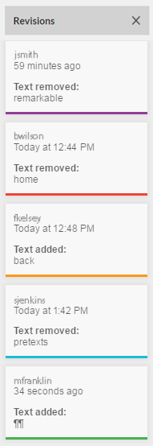
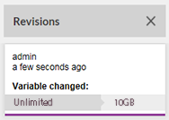
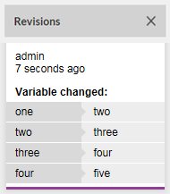

Tracking revisions in an Empower document
Revision tracking lets you keep a record of the edits that you and other users make to text in an Empower document. When you turn on revision tracking, you can view your changes as you make them. For example, if you delete some existing text, Empower Editor marks out the text. If you enter new text, the new text appears in a different color than the old text, and the changes appear in the Revisions pane.
Keep in mind that revision tracking is not available in all Empower documents. If you need to track revisions in an Empower document, but the revision tracking tools are not available in Empower Editor, see the person who designed the Empower document.
If revision tracking is available in your Empower document, you can access the revision tracking tools from the REVIEW tab on the Menu bar in Empower Editor.
The following table describes the revision tracking tools that you can use:
| To | Do this |
|---|---|
| Turn on revision tracking |
Click |
| Choose how revisions are shown |
Choose one of the three options in the Revision view list:
|
| Navigate between revisions | Click , , , and . These options let you navigate to the first, previous, next, and last revisions in an Empower document. |
| Accept or reject revisions | Click or  . . |
| Open the Revisions pane | Click . This option shows each revision individually in a pane on the right side of the screen. You can navigate to a revision by clicking its value in the Revisions pane:  Note that Empower Editor automatically assigns one of five colors to each reviewer's revisions in order to help you quickly differentiate between reviewers. |
 . The availability of this option is determined by the person who designed your
. The availability of this option is determined by the person who designed your If your Empower document contains editable variables, changes to the variable values look the same as changes to other types of text within the body of the document. In the Revisions pane, however, you see the original and updated variable values side by side. If the revised variable is available on the same page or view, and it is not hidden or deleted, you can navigate to it by clicking its value in the Revisions pane.
The following examples show how changes to variable values appear in the Revisions pane:
| Change to a scalar variable | Change to multiple elements of an array variable |
|---|---|
|
 |
 |
Tip: Changes to array variables that contain a large number of elements can be confusing when they appear in the Revisions pane. For example, if your Empower document has an editable array variable that contains 50 elements, and you delete the first element in the array, then the other elements each shift one position, and in the Revisions pane it appears that all 49 have changed.